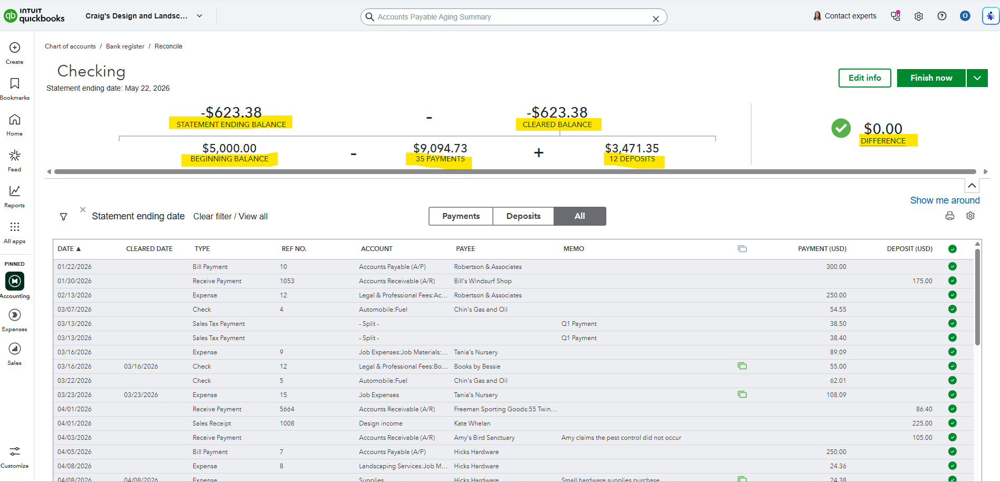

Purpose
Confirm that QuickBooks transactions match the bank or credit card statement for the period.
Simple Example
The Checking reconciliation shows the statement ending balance, beginning balance, cleared balance, payments, deposits, and a $0.00 difference.
Simple Bookkeeping Decision Rule
Reconciliation is complete only when the difference is $0.00 and the cleared transactions match the statement.

Analysis
I reviewed the reconciliation screens and reconciliation reports for Checking and Mastercard. The Checking reconciliation shows a statement ending balance of -$623.38, cleared balance of -$623.38, beginning balance of $5,000.00, 35 payments totaling $9,094.73, 12 deposits totaling $3,471.35, and a $0.00 difference. The Mastercard reconciliation shows a statement ending balance of $957.72, 17 charges totaling $1,857.72, 1 payment of $900.00, and a $0.00 difference.
Result
Both accounts reconcile with a $0.00 difference. This confirms the QuickBooks records match the statement activity for the selected period.